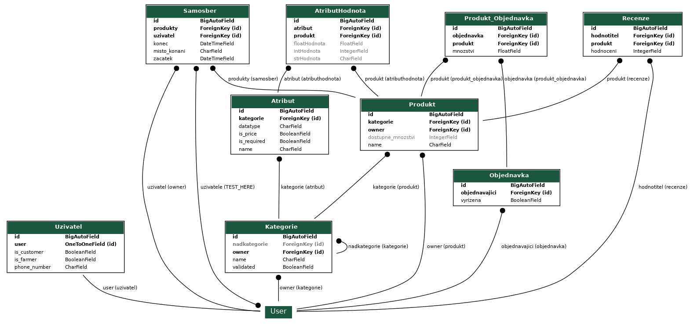

Zelny trh
- Autori
- Lukas Kraus (xkraus13)
xkraus13@stud.fit.vutbr.cz -
Navrh a implementace databaze, spravovani uzivatelu a kategorii, registrace, prihlasovani, uprava profilu (informaci i hesla), vyhledavani produktu, pomahani kolegum.
- Jan Kleisl (xkleis00)
xkleis00@stud.fit.vutbr.cz -
Vedouci tymu, navrh uzivatelskeho rozhrani aplikace, navrh databaze, vytvoreni nabidky a samosberu, hlavni stranka, recenze produktu, pomahani kolegum.
- Jan Pryc (xprycj00)
xprycj00@stud.fit.vutbr.cz -
Navrh uzivatelskeho rozhrani aplikace, zobrazovani a uprava nabidek a objednavek i se samosbery, zobrazovani produktu, pomahani kolegum.
- URL aplikace
- http://130.61.222.133:8000/index
Uzivatele systemu pro testovani
| Login | Heslo | Role |
|---|
| admin | IISprojekt123 | administrator |
| moderator | IISprojekt123 | moderator |
| Pepa | IISprojekt123 | farmar |
| Ivan | IISprojekt123 | zakaznik |
| Marie | IISprojekt123 | |
Video
Odkaz na demonstracni video: demonstracni video
Implementace
- category_approve.py - Schvalovani a spravovani kategorii.
- create_offer.py - Vytvari nabidku.
- edit_attribute.py - Editace atributu.
- edit_category.py - Editace kategorie.
- edit_moderators.py - Editace uzivatelu a udelovani prav moderatora.
- edit_profile.py - Editace profilu uzivatele.
- index.py - Titulni strana (vyhledavani produktu).
- kosik.py - Vyrizovani objednavek.
- nabidky.py - Zobrazovani nabidek a samosberu.
- nabidky_change.py - uprava nabidek.
- new_attribute.py - Vytvoreni atributu.
- new_category.py - Vytvoreni kategorie.
- objednavky.py - Zobrazovani objednavek a registrovanych samosberu.
- register.py - Registrace.
Databaze

Instalace a spusteni
- SW pozadavky
- Python 3.9+ (testovano v Pythonu 3.10.7)
- PostgreSQL 15
- Pozn. testovano pod Windows 10 a Ubuntu 22.04 Linux
- Instalace djanga:
- pip install django
- pip install django-unicorn
- pip install django-crispy-forms
- pip install crispy-bootstrap5
- pip install psycopg2 | pip install psycopg2-binary
- pip install django-multi-form-view
- Instalace databaze (postgreSQL):
- https://www.postgresql.org/download/
- vytvoreni uzivatele pro pripojeni:
- vytvoreni databaze:
- nastavit vlastnika vytvoreneho v minulem kroku
- Spusteni serveru a vytvoreni superusera:
- python manage.py runserver (spusteni serveru)
- python manage.py createsuperuser (vytvoreni superusera)
Zname problemy
Z casovych duvodu jsme nedodelali u samosberu nastaveni presneho casu pouze datumu.